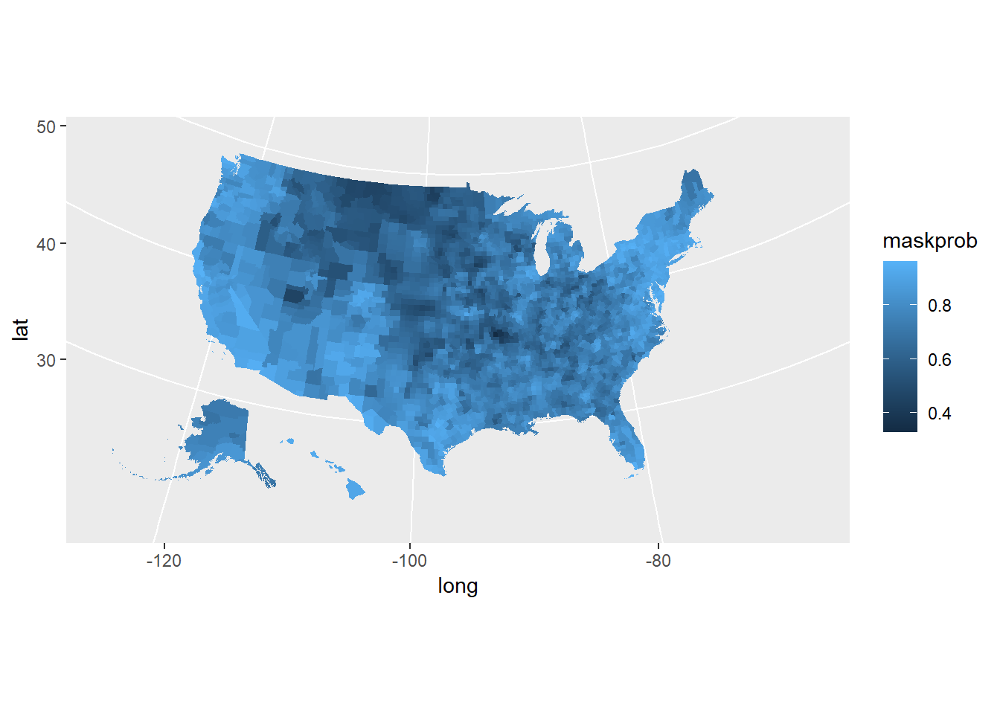
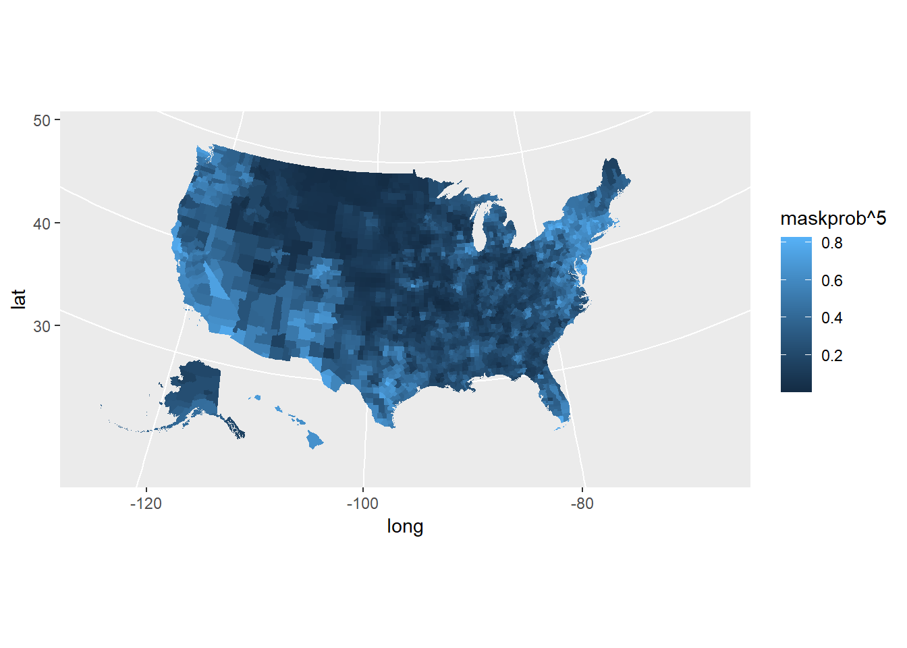
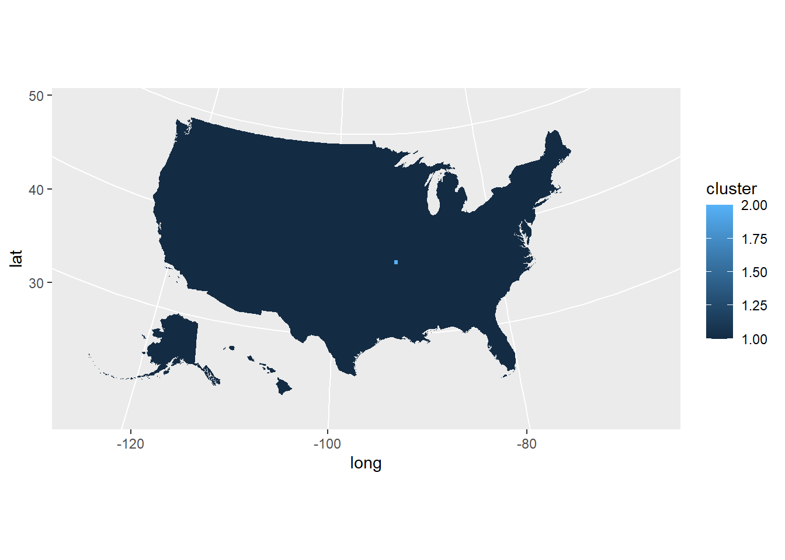
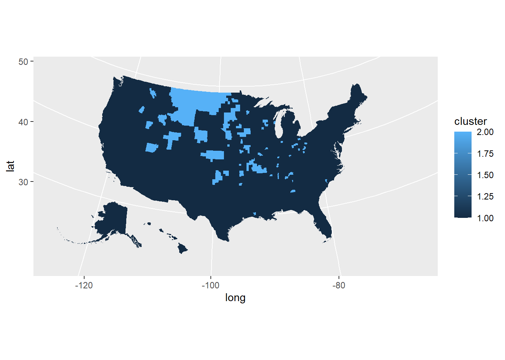
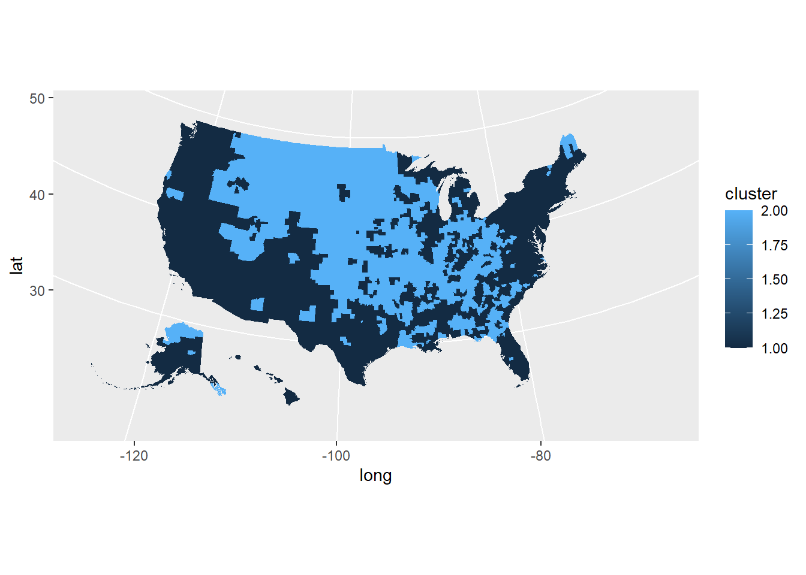
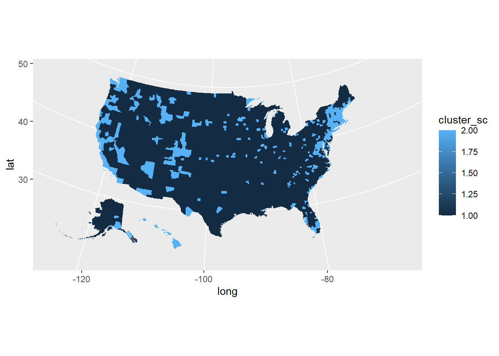
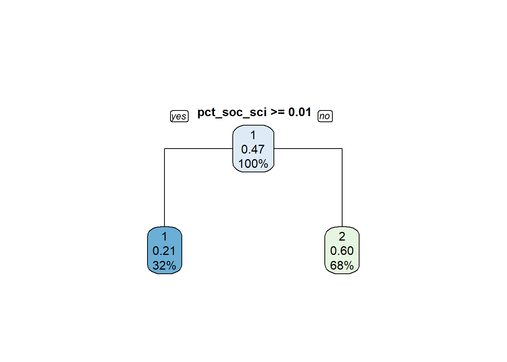

Today we will be exploring mask wearing compliance and ways to cluster localities by this metric. We will also explore ways to predict it!
map_data = counties %>% left_join(mask_use_by_county,
by = c("county_fips" = "COUNTYFP")) %>%
mutate(maskprob = NEVER*0 + RARELY*.2 + SOMETIMES*.35 + FREQUENTLY*.8 + ALWAYS)
#probability estimates from adjectives pulled from https://grammar.reverso.net/frequency/
map_data %>%
ggplot(aes(long, lat, group = group, fill = maskprob)) +
geom_polygon(color = NA) +
coord_map(projection = "albers", lat0 = 39, lat1 = 45)
map_data %>%
ggplot(aes(long, lat, group = group, fill = maskprob^5)) +
geom_polygon(color = NA) +
coord_map(projection = "albers", lat0 = 39, lat1 = 45)
The approach from 2 better, because this gives you a better sense what your probability of being in a dangerous situation with multiple unmasked people is. It also gives you a better sense of transmission, as Covid spreads from multiple people not taking proper precautions. However, the approach from 1 can give you a better picture of differences between counties between the extremes of compliance versus non compliance. The approach from 2 tends to make counties with lower compliance even lower by a large amount.
mask_use_nofip = mask_use_by_county %>%
mutate(maskprob = NEVER*0 + RARELY*.2 + SOMETIMES*.35 + FREQUENTLY*.8 + ALWAYS) %>%
select(maskprob)hc.single = hclust(dist(mask_use_nofip), method="single")
mask_use_cluster_s = mask_use_nofip %>%
mutate(cluster = cutree(hc.single, 2))
mask_use_cluster_s$COUNTYFP = mask_use_by_county$COUNTYFP
mask_use_cluster_s %>% left_join(counties, by = c("COUNTYFP" = "county_fips")) %>%
ggplot(aes(long, lat, group = group, fill = cluster)) +
geom_polygon(color = NA) +
coord_map(projection = "albers", lat0 = 39, lat1 = 45)
hc.complete = hclust(dist(mask_use_nofip), method="complete")
mask_use_cluster_c = mask_use_nofip %>%
mutate(cluster = cutree(hc.complete, 2))
mask_use_cluster_c$COUNTYFP = mask_use_by_county$COUNTYFP
mask_use_cluster_c %>% left_join(counties, by = c("COUNTYFP" = "county_fips")) %>%
ggplot(aes(long, lat, group = group, fill = cluster)) +
geom_polygon(color = NA) +
coord_map(projection = "albers", lat0 = 39, lat1 = 45)
hc.average = hclust(dist(mask_use_nofip), method="average")
mask_use_cluster_a = mask_use_nofip %>%
mutate(cluster = cutree(hc.average, 2))
mask_use_cluster_a$COUNTYFP = mask_use_by_county$COUNTYFP
mask_use_cluster_a %>% left_join(counties, by = c("COUNTYFP" = "county_fips")) %>%
ggplot(aes(long, lat, group = group, fill = cluster)) +
geom_polygon(color = NA) +
coord_map(projection = "albers", lat0 = 39, lat1 = 45)set.seed(1)
km.out=kmeans(mask_use_nofip,2,nstart=20)
mask_use_cluster_k = mask_use_nofip %>%
mutate(cluster = km.out$cluster)
mask_use_cluster_k$COUNTYFP = mask_use_by_county$COUNTYFP
mask_use_cluster_k %>% left_join(counties, by = c("COUNTYFP" = "county_fips")) %>%
ggplot(aes(long, lat, group = group, fill = cluster)) +
geom_polygon(color = NA) +
coord_map(projection = "albers", lat0 = 39, lat1 = 45)
It appears the K Means clustering was the only type to generate something useful. The clusters are near each other in size, which makes for a more natural seeming cutoff. The cutoff point for the two clusters was 72% probability, which seems pretty good (if you don’t think about question 2). In this case, the higher compliance cluster came out as cluster 1.
var <- load_variables(2019, "acs1", cache = TRUE)API Key hidden!
census_data = get_acs(geography = "county", variables = c(soc_sci = "B15012_006",
totalpop = "B01003_001",
year = 2019))## Getting data from the 2015-2019 5-year ACS## Fetching data by table type ("B/C", "S", "DP") and combining the result.I have chosen to reuse my Social Scientist Majors variable. This variable reveals the number of people who studied social sciences in college. Bringing in total population to report Social Science majors as a percentage.
census_wider = census_data %>%
pivot_wider(id_cols = c(NAME, GEOID), names_from = variable, values_from = estimate) %>%
separate(NAME, into = c("county", "state"), sep = ", ") %>%
arrange(state, county) %>% mutate(pct_soc_sci = soc_sci/totalpop)
map_data_asc = mask_use_by_county %>% left_join(census_wider,
by = c("COUNTYFP" = "GEOID")) %>%
mutate(maskprob = NEVER*0 + RARELY*.2 + SOMETIMES*.35 + FREQUENTLY*.8 + ALWAYS)set.seed(1)
km.out.acs=kmeans(select(map_data_asc, pct_soc_sci),2,nstart=20)
mask_use_cluster_k_acs = map_data_asc %>%
mutate(cluster_sc = km.out.acs$cluster)
#plotting... looks similar to maskprob map
mask_use_cluster_k_acs %>% left_join(counties, by = c("COUNTYFP" = "county_fips")) %>%
ggplot(aes(long, lat, group = group, fill = cluster_sc)) +
geom_polygon(color = NA) +
coord_map(projection = "albers", lat0 = 39, lat1 = 45)
I decided to also do a KMeans cluster for my social scientist variable. Cluster number 2 indicates more social science majors. It looks somewhat like the K Means map for mask usage, which is a good sign.
mask_use_cluster_k_acs$cluster_mask = mask_use_cluster_k$cluster
sample_data <- sample.int(n = nrow(mask_use_cluster_k_acs),
size = floor(.8*nrow(mask_use_cluster_k_acs)), replace = F)
train_data <- mask_use_cluster_k_acs[sample_data,]
test_data <- mask_use_cluster_k_acs[-sample_data,]We will now predict what cluster number for mask wearing is predicted based on percentage of social scientists.
set.seed(1)
tree = rpart(cluster_mask ~ pct_soc_sci, data = mask_use_cluster_k_acs, method = "class")
rpart.plot(tree, yesno = 2, type = 1)
pred1 = predict(tree, test_data, type = "class")I think we are going in the right direction… If your county has equal to or more than 1% social science majors, you have 79% chance of being in the higher compliance cluster!
confusionMatrix(as.factor(as.numeric(pred1)), as.factor(test_data$cluster_mask))## Confusion Matrix and Statistics
##
## Reference
## Prediction 1 2
## 1 175 36
## 2 161 257
##
## Accuracy : 0.6868
## 95% CI : (0.6489, 0.7229)
## No Information Rate : 0.5342
## P-Value [Acc > NIR] : 4.617e-15
##
## Kappa : 0.3874
##
## Mcnemar's Test P-Value : < 2.2e-16
##
## Sensitivity : 0.5208
## Specificity : 0.8771
## Pos Pred Value : 0.8294
## Neg Pred Value : 0.6148
## Prevalence : 0.5342
## Detection Rate : 0.2782
## Detection Prevalence : 0.3355
## Balanced Accuracy : 0.6990
##
## 'Positive' Class : 1
## Plugging this tree into a confusion matrix yields an accuracy of over 68%! I think this variable is very good for predicting mask wearing compliance. Thank you social scientists!
We thank the New York Times for the dataset.